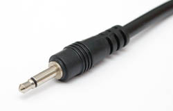
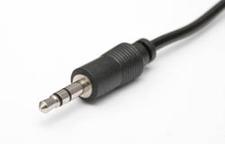
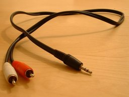

Tutorial - Connecting a Microphone
Connecting a microphone to your computer
If your computer has a microphone input port
You're all set. Just plug a compatible microphone into the microphone input port on your computer.
What do we mean by compatible? Any microphone with a permanently attached cord that ends in a mini-plug should work. Note that many soundcards provide battery voltage for mono electret microphones on the ring of a stereo mini-plug. Check your computer manual to be sure if this feature is provided. If it is, be sure to use a microphone that is designed to accommodate this.
|  |  | |
| A mono mini-plug | A stereo mini-plug |
A computer headset-mic combination is pretty much guaranteed to work. These microphones are not the highest quality, but can be had fairly inexpensively. If you're just getting started and want to experiment without spending a lot of money, one of these would be a good choice. Just do not be surprised if your recorded voice sounds a bit tinny or flat.
Desktop-standing microphones can be had for at little as $10 or as much as $500. Choosing a microphone is beyond the scope of this tutorial. Try searching the web for "computer microphones", visit your local computer store, talk to your friends, or ask questions on the Audacity Forum.
Unless you are prepared to spend extra money for a microphone pre-amp or standalone mixer do not buy a microphone with an XLR connector:

| |
| An XLR plug |
If your computer does not have a microphone input port
Do not plug a microphone into the line input port on your computer. The volume will be way too low (the line input port does not apply the needed amplification to boost the very quiet signal from the microphone). You will not break anything, but you will be very frustrated with the results.
Option 1 - Buy a microphone to USB adapter
These devices plug into a USB port on your computer, and have a microphone input jack (usually 1/8").
You will still need a compatible microphone. Be sure to carefully read the specifications of any adapter you are considering and make sure you get a microphone that will work with that interface.
Option 2 - Buy a USB microphone
These microphones are becoming more common. They combine a microphone and the USB adapter all in one package.
Models are available by Logitech, Samson, Nady and Audio-technica, among others.
Option 3 - Buy a mixer
This may be the most expensive option but provides the most flexibility.
Any inexpensive DJ mixer should include a microphone input. The electronics in the mixer will boost the microphone signal, and the output of the mixer will be connected to the line in port on your computer. The DJ mixer will also have inputs for turntables so you can use it record your LPs in preparation for converting them to CD. The DJ mixer will most likely have line level inputs as well, so you could connect a cassette deck or other line level source to the mixer.
Another option is a small inexpensive microphone and line level mixer. Note that these mixers do not usually include inputs for turntables.
When purchasing a mixer make sure to also buy a microphone that is compatible with the mixer. Unless you are sure of what you are doing it is probably best to visit your local music store. Don't let them sell you a $1000 DJ mixer and $500 microphone - unless you are a professional DJ you do not need equipment at that level.
The advantage of a mixer is that you can connect all your audio sources to the mixer then connect the mixer to your computer. No need to be constantly re-plugging things at the back of your computer.
To connect the mixer to your computer you will probably need a dual-RCA to stereo mini-plug cable like this one:
|  | |
| Dual-RCA to mini-plug cable |
Plug the RCA plugs into the RCA output jacks on the back of the mixer. Plug the stereo mini-plug into the line input port on your computer. There are also mixers that can be connected to the computer via USB and do not require the stereo mini-plug cable.
If you do buy a mixer, you will no longer be connecting the microphone directly to your computer. See Connecting a Mixer.